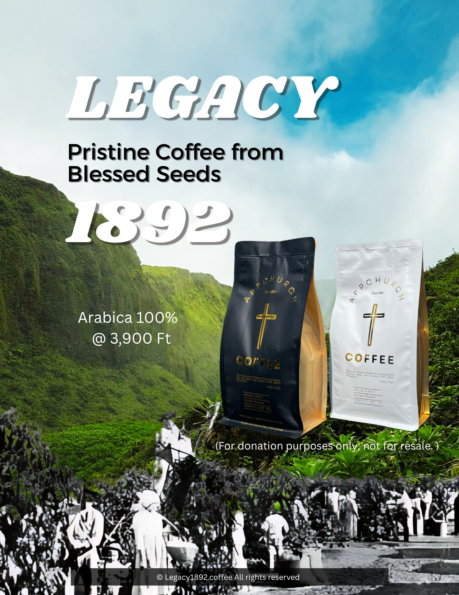
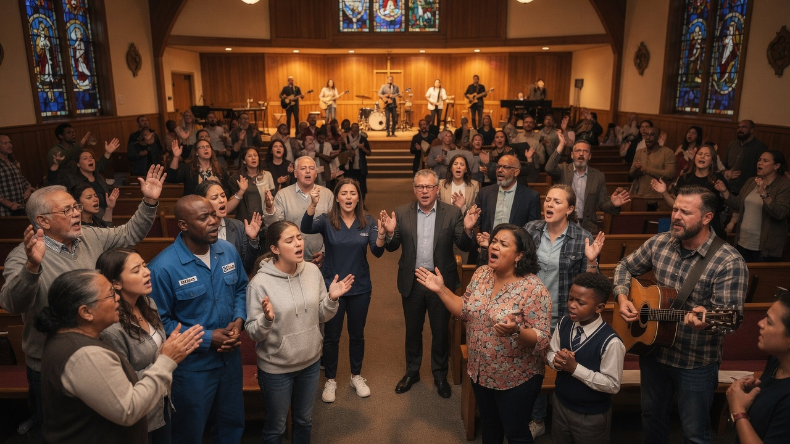
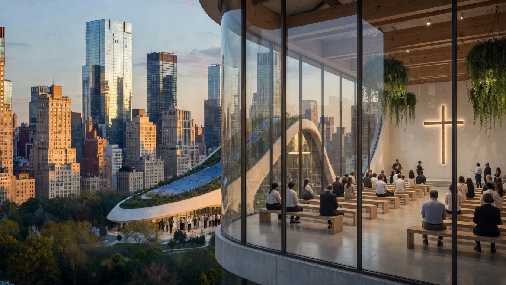
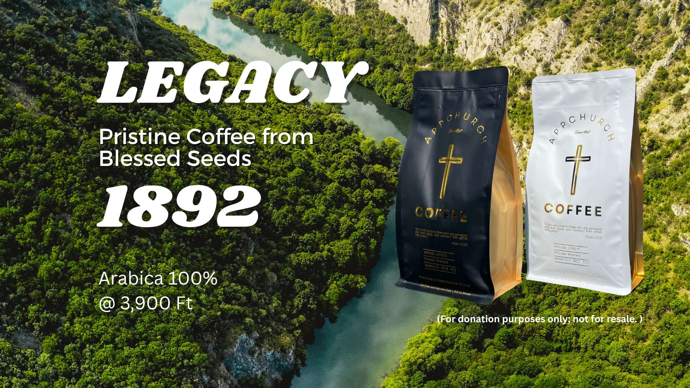

AppChurch is a global Christian community bridging the gospel with technology, AI, and the digital age — through online worship, worldwide chapels, and compassionate community services.
AppChurch exists at the intersection of ancient faith and emerging technology. We believe Jesus saves — not just in the past, but right now, through every screen, every connection, every digital frontier.
In a world shaped by AI, the internet, and digital convergence, AppChurch brings the timeless gospel into new contexts — online and in physical chapels — while serving our communities with health, hospitality, and hope.
The life, death, and resurrection of Jesus is the foundation — online and offline.
We embrace AI and the internet as new frontiers for spreading love, life, and meaning.
From cognitive health screenings to community cafes — we serve the whole person.
24/7 online worship, live-streamed services, digital small groups, and AI-assisted Bible study — the church always open in your pocket.
Download on App StoreReal places for real community. Our growing network of chapels creates spaces for worship, belonging, and transformation in cities worldwide.
Exploring how AI, robotics, and digital convergence intersect with faith, meaning, and the human soul — technology asks the deepest questions.
Taking the gospel to every corner of the earth — through digital platforms reaching billions and physical presence in communities that need hope.
Low-cost MCI cognitive screenings, community health outreach, and pastoral care — serving the whole person in spirit, mind, and body.
Helping people find meaning and discover their God-given purpose — for a generation searching for answers in a digital world.
Faith in action. AppChurch extends the love of Christ beyond Sunday services — through community gathering spaces and accessible health programs that care for body, mind, and spirit.

Great conversations about faith, life, purpose, and the future begin over a great cup of coffee. Legacy 1892 is more than a café — it is a community gathering place where people from all walks of life find warmth, belonging, and meaningful connection.
Whether you are exploring questions of faith for the first time, looking for a quiet place to reflect, or simply seeking good company and an excellent brew, you are welcome here. Every cup carries meaning.
AppChurch partners with healthcare professionals to offer low-cost Mild Cognitive Impairment (MCI) screenings to our community. MCI is an early stage of memory or thinking decline that can precede dementia — and early detection makes all the difference.
Our trained screeners conduct brief, non-invasive cognitive assessments and connect participants with appropriate medical resources, follow-up care, and family support. This service is offered at low cost, is completely confidential, and open to the community — because caring for the mind is an expression of loving our neighbor.
Your generosity keeps our digital church running 24/7 and expands our growing network of physical chapels — where lives are transformed by the gospel.
Keep our 24/7 digital church platform running — live streams, online community, AI-assisted discipleship, and global digital ministry.
Help us plant and sustain physical chapels worldwide — places of refuge, worship, and transformation for the digital generation.
On-the-ground community impact with low-cost cognitive health screenings and a community café that welcomes everyone.
"Each of you should give what you have decided in your heart to give, not reluctantly or under compulsion, for God loves a cheerful giver."
2 Corinthians 9:7



The Holy Spirit is moving — from underground churches to digital revivals. Stay informed with today's top Christian, faith, and religious news from across the globe.
Whether you want to partner with us, attend a service, inquire about MCI screening, plant a chapel, or simply say hello — we'd love to hear from you. Every conversation matters.
"For where two or three gather in my name, there am I with them."
— Matthew 18:20